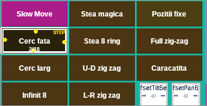

For: FullPlayer
Mixer & Live is the work area of the show. Its big part is the Live panel: one tab for each page of the project, and on the page its buttons, sliders and pictures. A button holds a light sequence - its steps (cues), each with the values of the channels and its fade and wait times - or only commands; a slider sets channels, a speed or runs commands. Under the Live panel the General Mixer can be shown, with every DMX channel of a universe. The function bar above the pages holds the tools of the work area (see The main window).

Buttons of the project Andrei_edit. Cerc fata runs.
| Page | What it explains |
|---|---|
| Buttons of the Live panel | Starting and stopping, how a running button looks, the marks STEP, FLASH and FADE, keys and MIDI, the right-click menu, Speed Control. |
| Object Propertys | The settings of a button: how it plays, its start and stop commands, Loop, Group Index, Flash, its key and MIDI, its colour. |
| Sliders | What a slider controls, its commands and its settings. |
| Edit Cue Steps | The steps of a button: changing them live, adding, moving, timing. |
| The Library | Shows, light sequences, BPM lists, audio objects; new buttons by dragging; Copy, Combine, XML Merge Pro. |
| The General Mixer | The channels of a universe as faders; OUT, AUTO, MAN and IN; Freeze. |
| Fixture Control | The fixtures set by what their channels do: the Pan / Tilt pad, presets by their pictures, the colour wheel; several heads together. |
| Correction Pan / Tilt and Focus | Each fixture's own correction of Pan, Tilt and Focus, so that the beams stand parallel and look alike. |
| Effect Generator Full | Effects for the ticked fixtures; the Oscillator as in LumiDMX; changes that go live while it plays. |
| Pixel Chase Full | Dimmer and strobe chases drawn on a matrix of the fixtures. |
| Color Chase Full | Rainbow effects, colour and dimmer chases on the groups; the Master Loop. |
| The DMX Board | The 512 channels as a board of cells: select them and set them. |
| The Monitor | A small window always in front: chosen sliders, BPM of groups, copies of the top bar's controls. |
| Stage View | A window always in front: every fixture as on the stage with its colours live - its beam and its LED segments. |
| Out loop | In Freeze's place (Option): the interfaces play a recording of the running buttons while you work in the program freely. |
| Lock Live-panel | Only the pages and the panel, on the whole screen, for the show. |
| Design Live-Panel Full | Adding, moving and sizing buttons, sliders and pictures; pages. |
The remote player (Back, Play, Forward) is in Remote, controllers and MIDI; the commands of buttons, sliders and macros in Macros and the Command Line.